Access eStatements
This guide will show you how to set-up and access eStatements. eStatements are digital versions of your bank statements. You can view, download, or print them from your computer or phone instead of getting them in the mail.
1
Click the "More" menu.
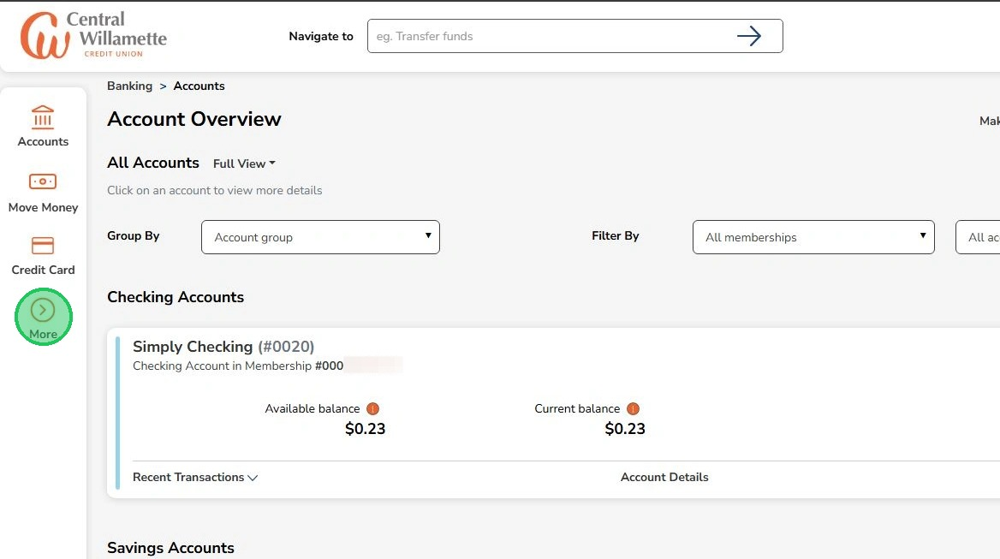
2
Click "View eStatements"
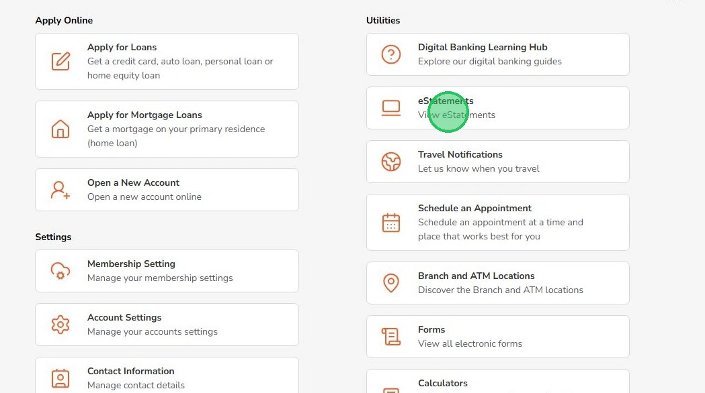
3
Choose the member number for the eStatements you want to view.
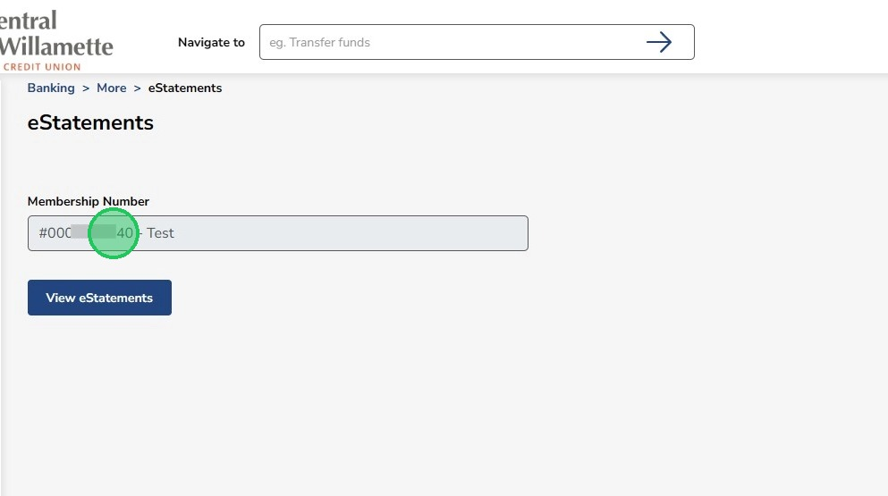
4
Click "View eStatements". First-time users must accept the Terms & Conditions.
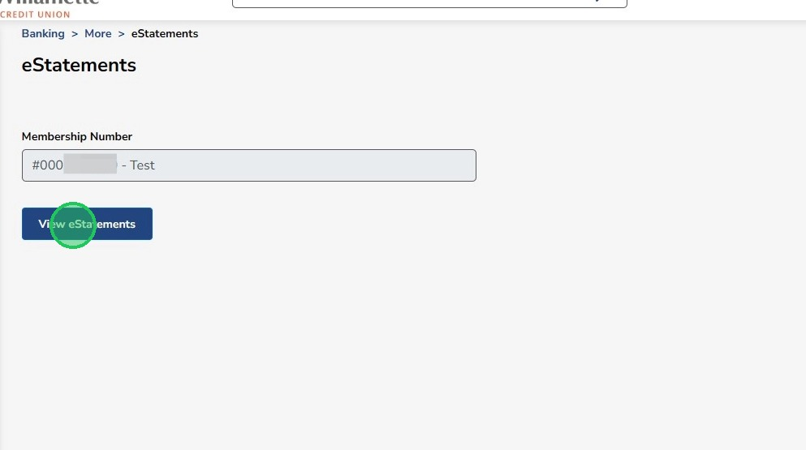
Make sure you're using the correct profile if you have both Business and Personal accounts.
5
Click "Register" to begin the registration process
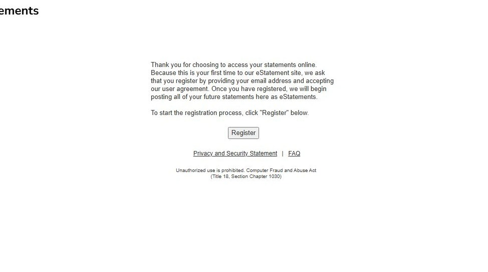
6
Enter in your name and email address. Click "Next".
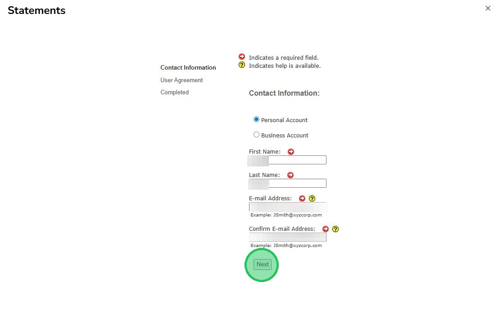
7
Review the User Agreement, click the checkbox to agree to the terms then click "Finish"
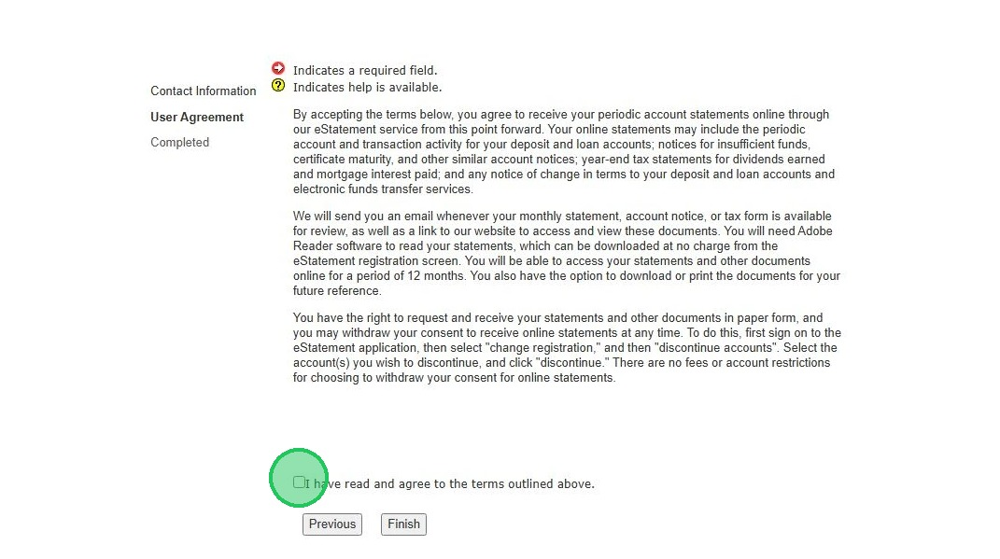
8
Use 'Account Statement' to select the document type.
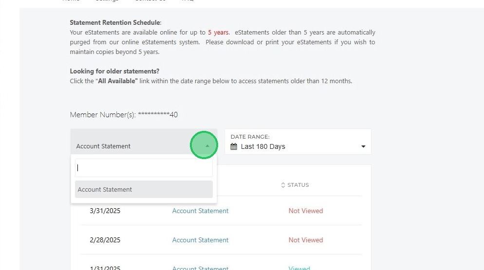
The "Status" column shows if you've viewed the document.
9
Adjust the Date Range as needed.
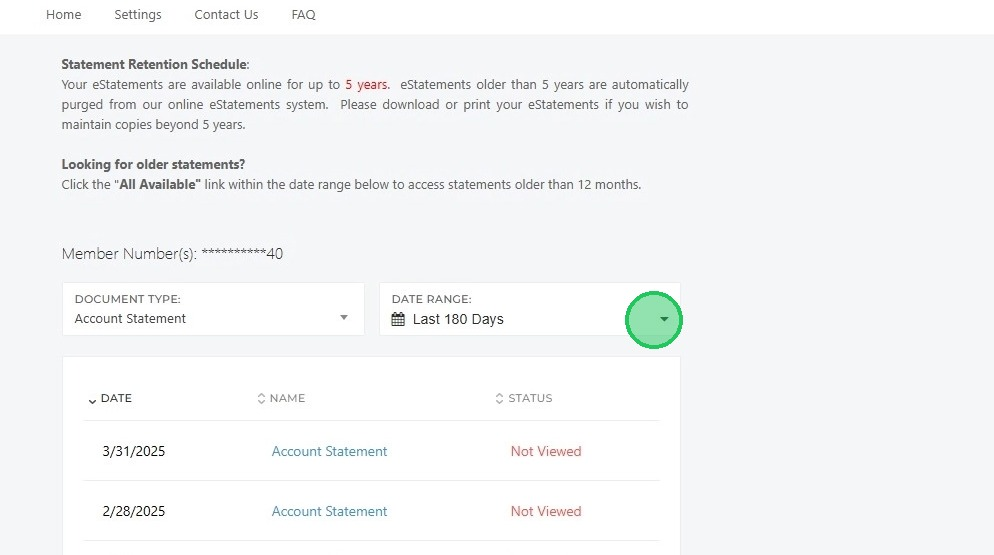
10
Click the blue document name to open it.
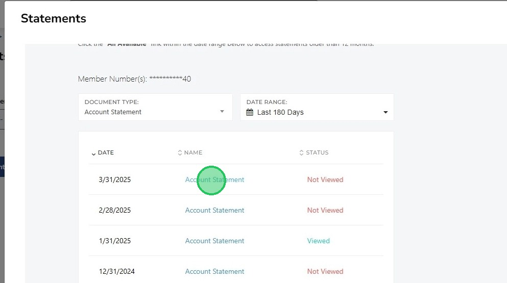
11
View, download, or print your document. Click "Home" to return to the eStatements page.
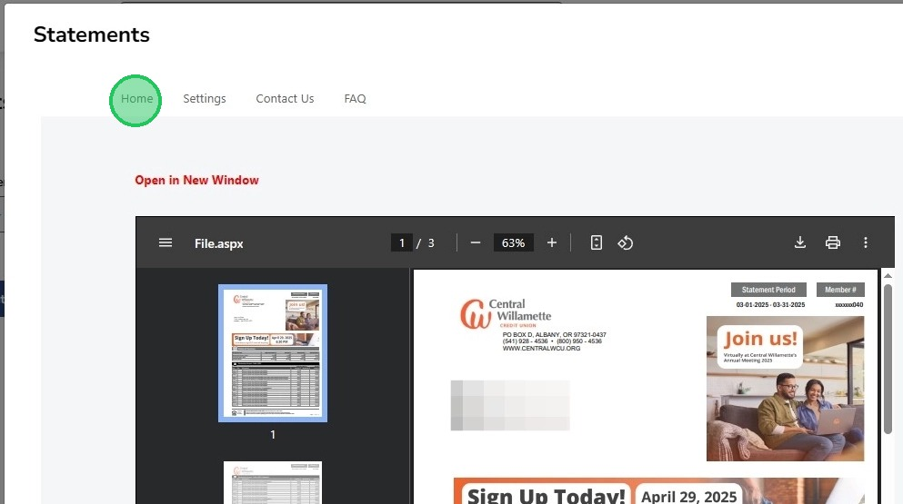
12
Click "Settings" to update your eStatement email or to stop/resume eStatements.
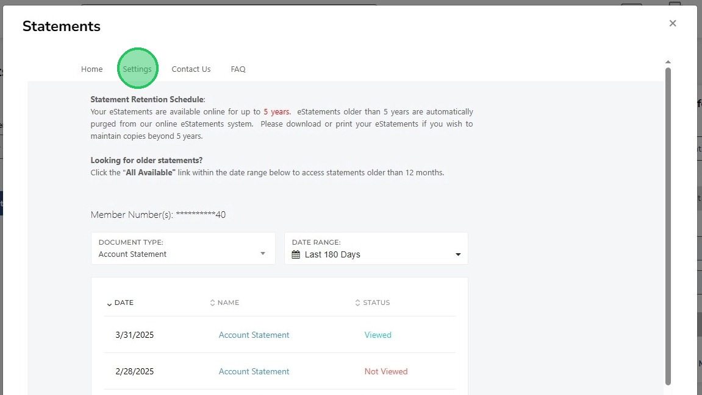
13
Available settings are shown here.
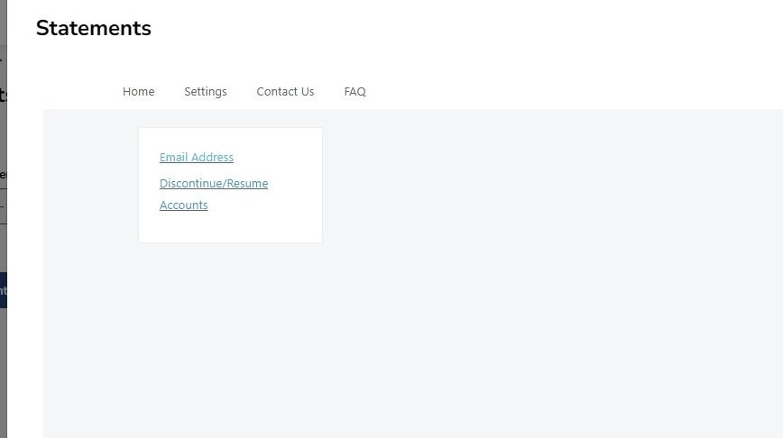
14
To change your email, enter and confirm the new address, then click "Submit"
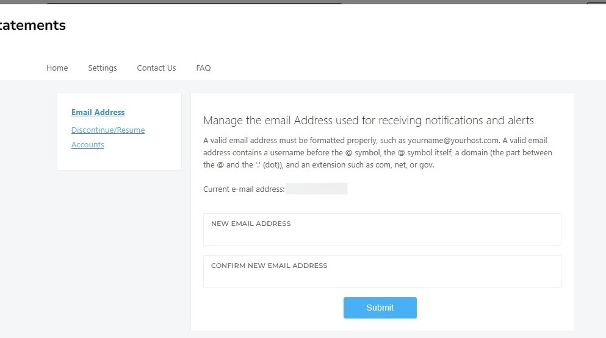
15
To stop or resume eStatements, check the box for the account and click "Submit"
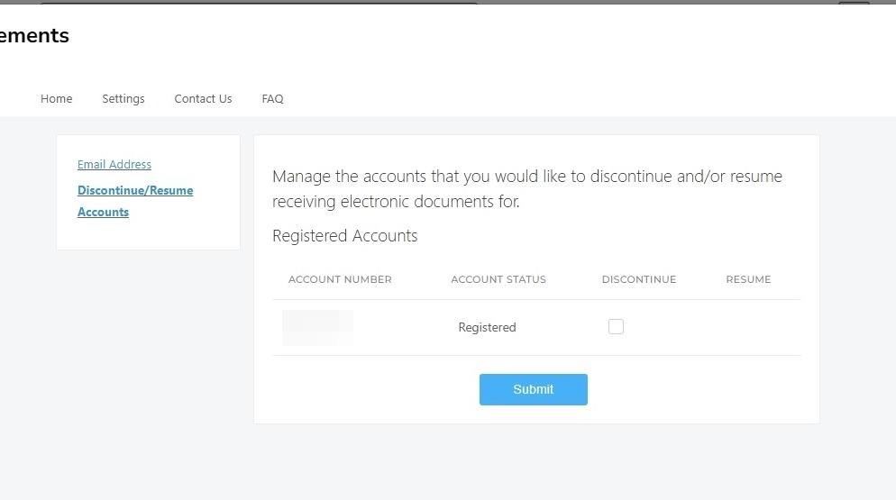
The FAQ tab answers common eStatement questions.